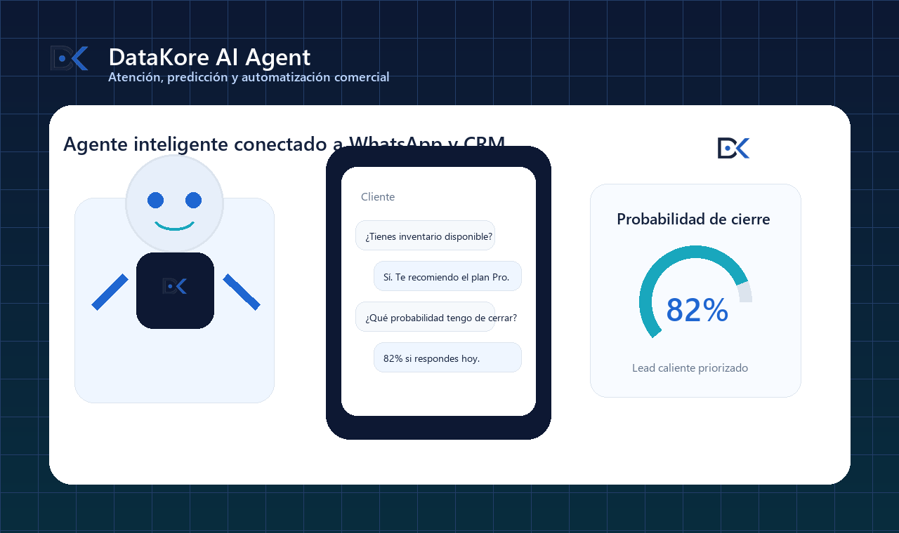

Inteligencia artificial
Un agente IA que atiende clientes, prioriza oportunidades y acelera ventas.
Creamos asistentes inteligentes para responder mensajes, clasificar leads, generar seguimientos y entregar información accionable a tu equipo.
Tu negocio gana velocidad comercial sin perder control.
Un agente DataKore puede conversar con clientes, recomendar productos, resumir solicitudes y estimar probabilidad de cierre para que el emprendedor tome mejores decisiones.
